Last Thursday, I left Fargo to fly to a city I’d never visited before.
Even before landing, I had a good feeling about the whole thing. The mountains for one. We flatlanders appreciate our space, but I’d be lying to say I don’t miss the mountains every once in a while. It was good to see some variation in landscape once again. Though Boise sits in the mostly flat Treasure Valley, the foothills surround and surprise.
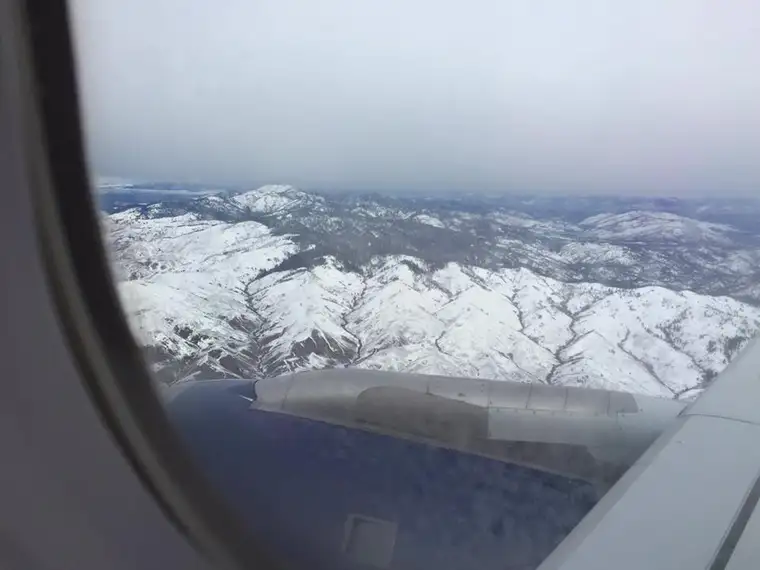
I could write much about the city and what I experienced there, along with the events we attended. And I hope to do that soon. But it’s what came before all that and left the deepest impression that begs to be shared right now — the touching hospitality that awaited.
Yes, on the other side of that first flight were friends who would prove to be the most hospitable hosts I’ve ever encountered.
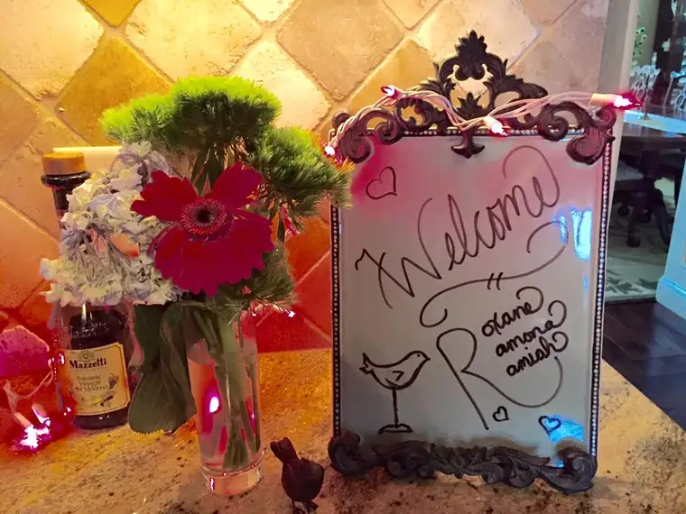
I knew this about them from previous experiences, but never before had I been able to truly absorb, in the fullest way imaginable, their servant, other-focused hearts.
Linda’s beautiful attention to detail was extraordinary and touching. And Jon frequently checked in to see if I had everything I needed, wondering if he could make me comfortable, and seeming grateful that I — and later, the other two guests — had stopped in. Yes, making us feel that we had blessed them by our visit.
Baskets with personalized goodies and notes awaited us in our temporary sleeping rooms.
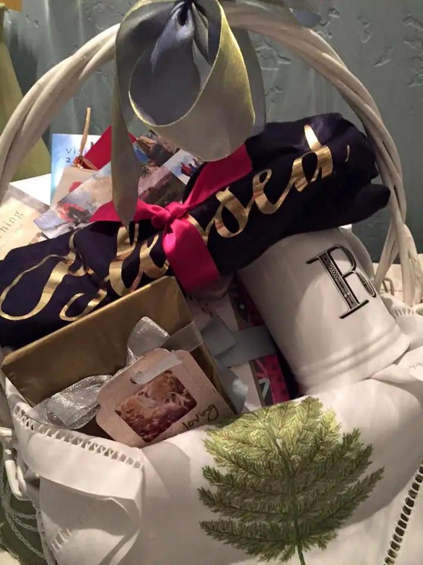
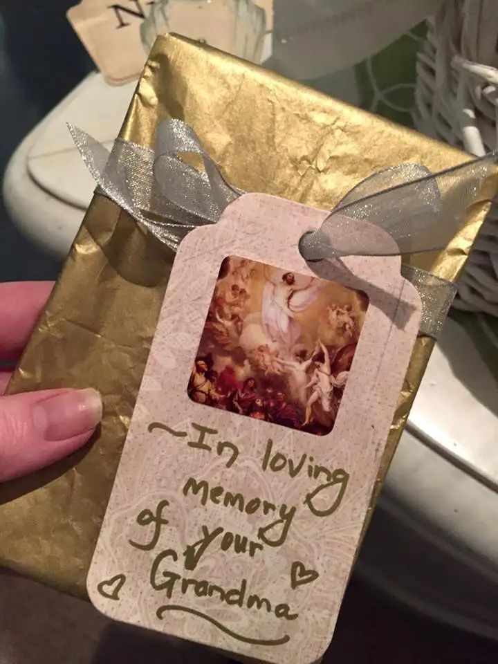
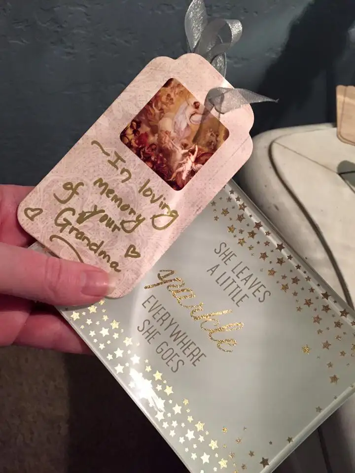
Words above the soft, inviting bed where I stayed the first night read, “Be Our Guest.” It was easy enough to surrender with these words gently demanding rest and relaxation.
That room looked out onto a running pond that feeds into the Boise River and brings wildlife to the area, including Canadian geese who have found the neighborhood a nice place to play and prune. They provided each morning’s alarm clock with their gentle honking.
In this space, any stress that had sneaked into our luggage by mistake quickly slipped away.
Linda, the consummate mother, even brought a bit of my home into hers by adding my youngest kids’ school pictures to my night stand.
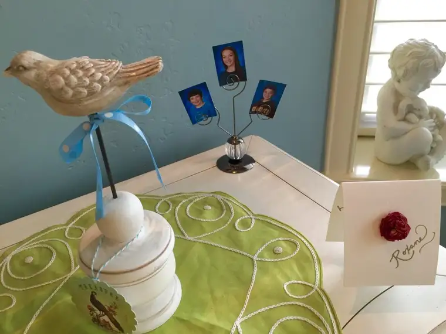
The first night, we enjoyed a quiet dinner together at a restaurant I’ve been to before in Minneapolis, but only on very rare occasion, since Fargo has yet to accommodate Cheesecake Factory. There, I delighted in Parmesan-coated chicken with fresh green beans.
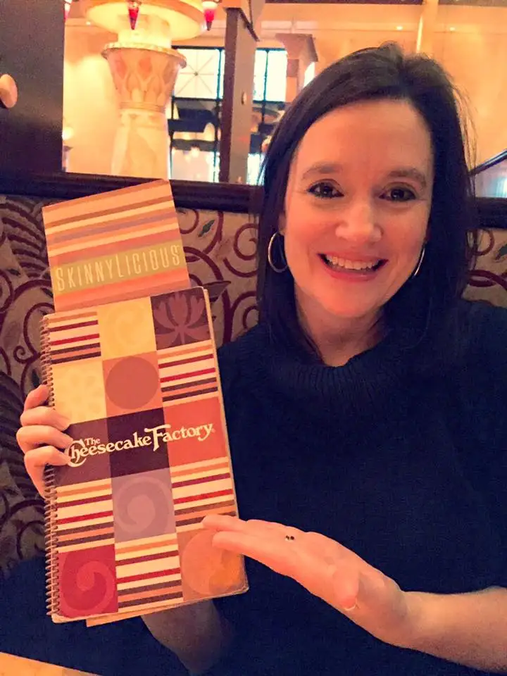
We passed on dessert because Linda had some warm, homemade gingersnaps waiting for us at home. They were just a teaser to the creation that followed the next night: a lemon and strawberry ice-cream cake she’d drummed up by scratch. This ended up being an indulgent, second-night midnight snack. Wow!

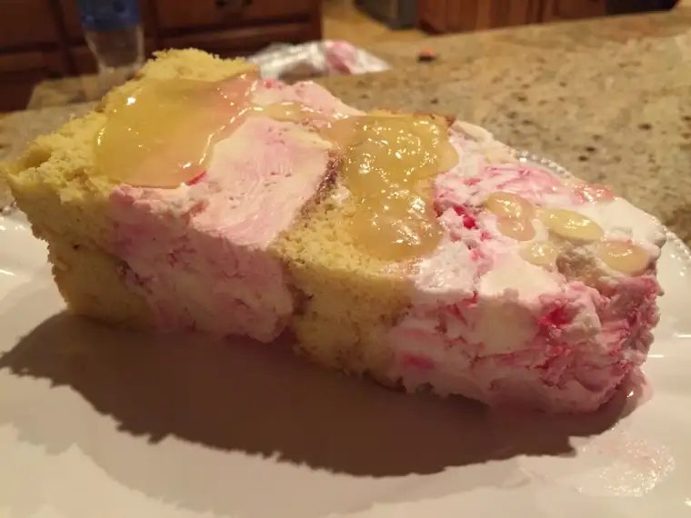
The next day, we returned to the airport to retrieve the rest of the guests.
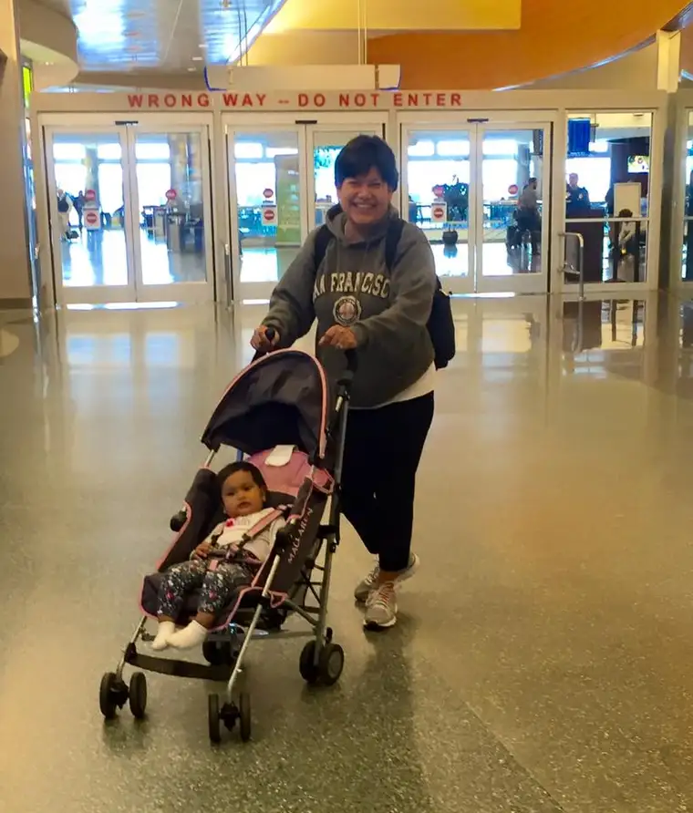
Thus, the main impetus for our gathering. Ramona had been invited by the Idaho Right to Life to speak at several events, and we were there to support her efforts in sharing her testimony on leaving the abortion industry and the many miracles that have come as a result.
I will share more about Boise in time. For now though, I just wanted to revel a bit in this beautiful gift of being received and loved, of late-night girl chats, of feeling God’s presence vividly in the mingling of kindred spirits and seizing the opportunity to lavish the extreme gift of it all.
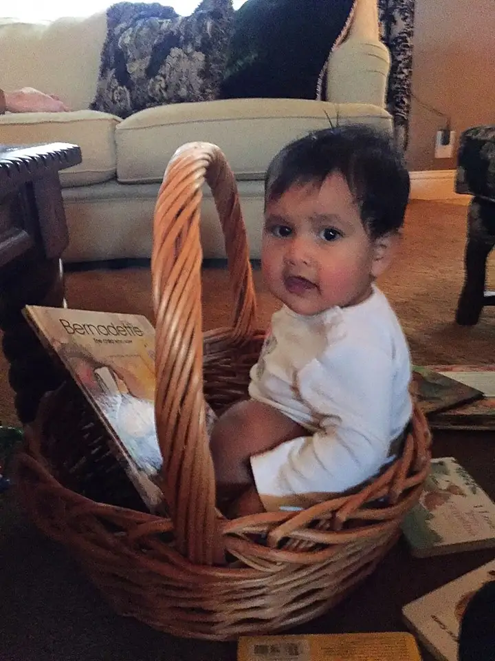
It’s mind-boggling to realize how much thought went into our visit well before our planes landed, including details I can’t show for lack of space. The numerous little touches made us three feel so cherished.

To welcome the faraway friend — this seems fitting to be included in the corporal acts of mercy. Through their generous spirits, our Boise hosts gave Ramona, Ramiah and me a welcome we will surely treasure for a very long time.
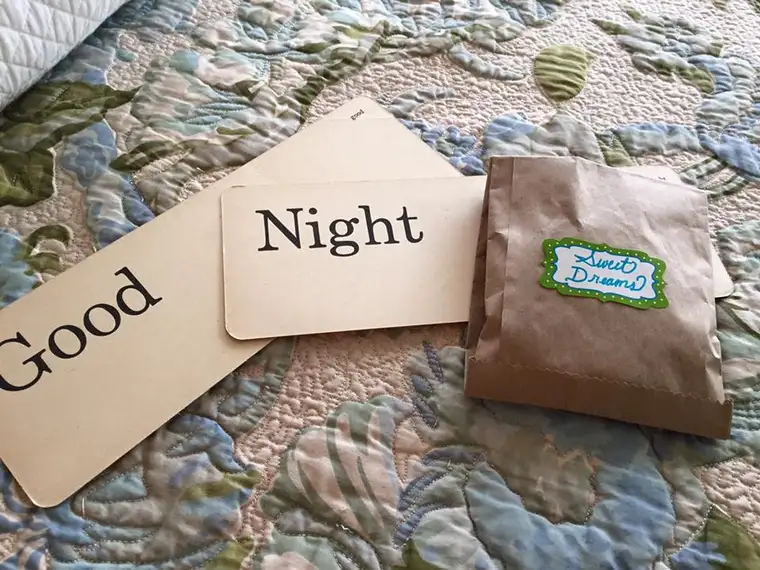
Q4U: When were you lovingly welcomed into someone else’s space? When did you do the welcoming?